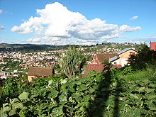

Villes de Madagascar
Un article de Wikipédia, l'encyclopédie libre.
|
|
Cet article est une ébauche concernant Madagascar.
Vous pouvez partager vos connaissances en l’améliorant (comment ?) selon les recommandations des projets correspondants.
|
Villes de Madagascar par ordre alphabétique[modifier]
|
Carte des villes principales de Madagascar
|
{kind=link}
{kind=link}
{kind=link}
{kind=link}
{kind=link}
{kind=link}
| Sommaire : | Haut - A B C D E F G H I J K L M N O P Q R S T U V W X Y Z |
|---|
A[modifier]
- Ambalavao
- Ambilobé
- Ambovombe
- Amparafaravola
- Andoany
- Anjozorobe
- Antananarivo (fr) Tananarive : capitale, 1,2 million d'habitants (2003).
- Antanifotsy
- Antsirabé : chef-lieu régional, 182 804 habitants (2005).
- Antsiranana (fr) Diego-Suarez : chef-lieu provincial, 105 000 habitants (2008).
- Antsohimbondrona
B[modifier]
F[modifier]
- Farafangana : chef-lieu régional, 24 000 habitants 2005.
- Fenoarivo Atsinanana (fr) Fénérive-Est : chef-lieu régional.
- Fianarantsoa : chef-lieu provincial, 144 225 habitants (2001).
M[modifier]
- Mahajanga (fr) Majunga : chef-lieu provincial.
- Mahavelona (fr) Foulpointe
- Maintirano : chef-lieu régional, 16 000 habitants (2005).
- Manakara : chef-lieu régional.
- Mananjary
- Maroantsetra
- Moramanga
- Marovoay
- Morondava : chef-lieu régional, 39 895 habitants (2007).
S[modifier]
T[modifier]
- Toamasina (fr) Tamatave : chef-lieu provincial, 206 390 habitants (2005).
- Tolanaro (fr) Fort-Dauphin : chef-lieu régionial, 46 000 habitants (2001).
- Toliara (fr) Tuléar : chef-lieu provincial, 114 400 habitants (2007).
V[modifier]
Tableau des villes[modifier]

 Tananarive, (Antananarivo)
Tananarive, (Antananarivo)
{kind=link}
| Statut | Ville | Population | Province | ||
| Cens. 1975 | Cens. 1993 | Cal. 2005 | |||
| 1. | Tananarive | 451.808 | 1.103.304 | 1.391.506 | Tananarive |
| 2. | Tamatave | 77.395 | 137.782 | 206.390 | Tamatave |
| 3. | Antsirabé | 78.941 | 126.062 | 182.804 | Tananarive |
| 4. | Fianarantsoa | 68.054 | 109.248 | 167.240 | Fianarantsoa |
| 5. | Majunga | 65.864 | 106.780 | 154.670 | Majunga |
| 6. | Tuléar | 45.676 | 80.826 | 115.328 | Tuléar |
| 7. | Diego-Suarez | 40.443 | 59.040 | 82.944 | Diego-Suarez |
| 8. | Antanifotsy | k.A. | 46.674 | 70.625 | Tananarive |
| 9. | Ambovombe | k.A. | 45.427 | 66.818 | Tuléar |
| 10. | Amparafaravola | k.A. | 33.098 | 51.520 | Tamatave |
| 11. | Fort-Dauphin | 19.605 | 30.690 | 45.141 | Tuléar |
| 12. | Ambatondrazaka | 18.044 | 27.711 | 43.134 | Tamatave |
| 13. | Mananara Nord | k.A. | 26.474 | 41.209 | Tamatave |
| 14. | Soavinandriana | k.A. | 26.734 | 40.453 | Tananarive |
| 15. | Mahanoro | k.A. | 25.620 | 39.879 | Tamatave |
| 16. | Soanierana Ivongo | k.A. | 25.229 | 39.271 | Tamatave |
| 17. | Faratsiho | k.A. | 24.824 | 37.563 | Tananarive |
| 18. | Nosy Varika | k.A. | 26.133 | 37.152 | Fianarantsoa |
| 19. | Vavatenina | k.A. | 23.716 | 36.916 | Tamatave |
| 20. | Morondava | 19.061 | 25.021 | 36.803 | Tuléar |
| 21. | Amboasary | k.A. | 24.531 | 36.082 | Tuléar |
| 22. | Manakara | 19.768 | 24.970 | 35.499 | Fianarantsoa |
| 23. | Antalaha | 17.541 | 23.949 | 34.112 | Diego-Suarez |
| 24. | Ikongo | k.A. | 22.772 | 32.374 | Fianarantsoa |
| 25. | Manjakandriana | k.A. | 21.042 | 31.840 | Tananarive |
| 26. | Sambava | k.A. | 22.131 | 31.522 | Diego-Suarez |
| 27. | Fandriana | k.A. | 22.113 | 31.437 | Fianarantsoa |
| 28. | Marovoay | 20.253 | 20.910 | 31.253 | Majunga |
| 29. | Betioky | k.A. | 21.145 | 31.102 | Tuléar |
| 30. | Ambanja | 12.258 | 21.498 | 30.621 | Diego-Suarez |
| 31. | Ambositra | 16.780 | 21.350 | 30.353 | Fianarantsoa |
Annexes[modifier]
Sources[modifier]
- (de) Cet article est partiellement ou en totalité issu de l’article de Wikipédia en allemand intitulé « Liste der Städte in Madagaskar » (voir la liste des auteurs)